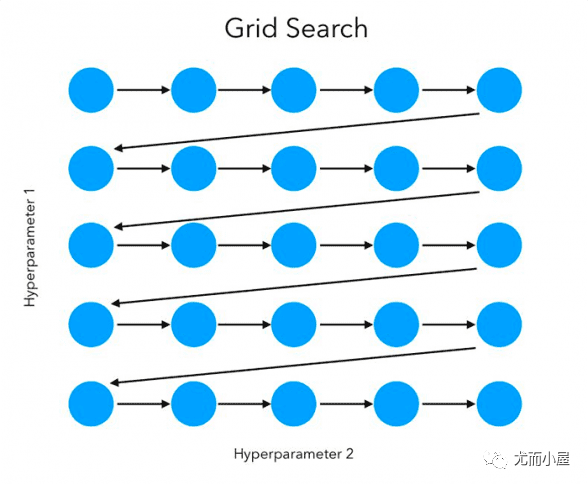
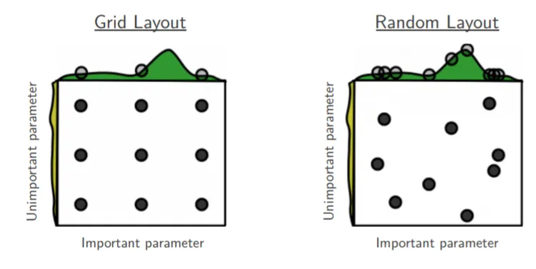
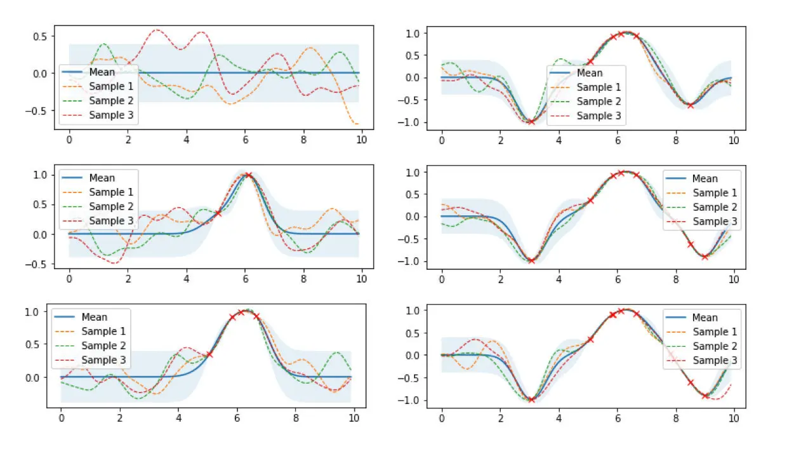
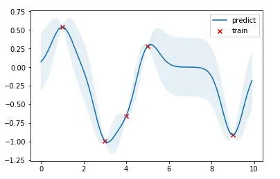
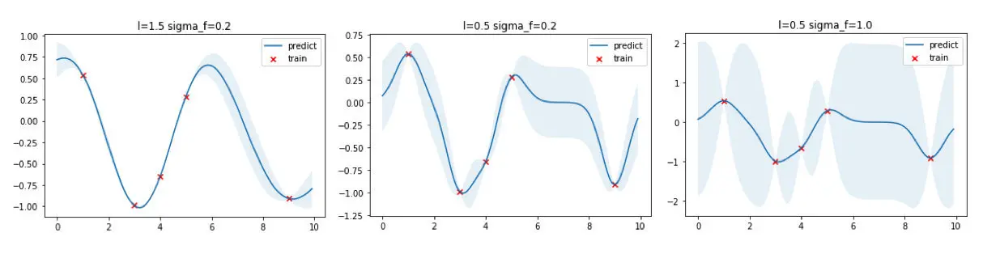
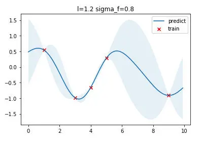
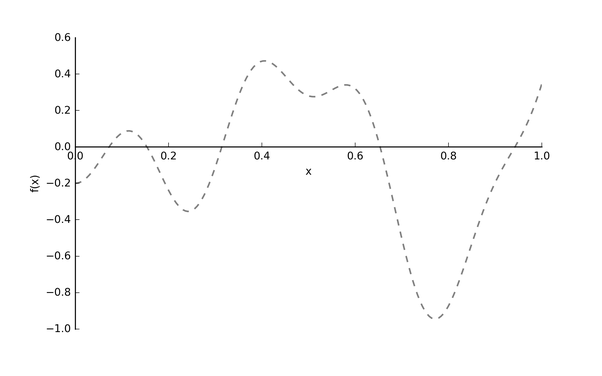
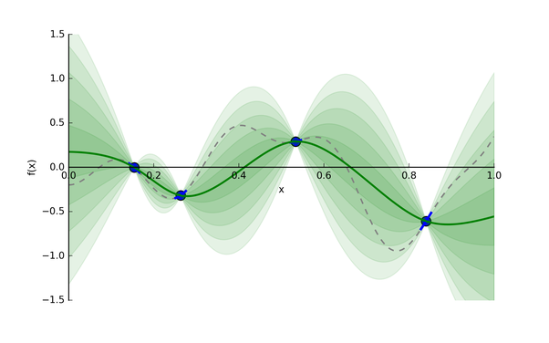

默认参数的最优化
默认参数的最优化
场景：速读时，有些学生速读 1 次就能复述，有些需要 2 次，有些需要 N 次，而建议速读次数 X 是个默认值，这个默认值到底取多少合适
技术：使用线性回归技术
什么是好的超参数优化算法
如果说只是为了找到最优的超参数组合而不考虑其他的因素，那么我们那可以用穷举法，把所有超参数组合都尝试一遍，这样肯定能找到最优的。但是我们都知道这样肯定不行，因为我们还需要考虑时间，计算资源等因素。而这些因素我们可以称为 Budget, 用 表示。
假设一开始候选的超参数组合数量是 ，那么分配到每个超参数组的预算就是 。所以 Hyperband 做的事情就是在 与 做权衡 (tradeoff)。
也就是说如果我们希望候选的超参数越多越好，因为这样能够包含最优超参数的可能性也就越大，但是此时分配到每个超参数组的预算也就越少，那么找到最优超参数的可能性就降低了。反之亦然。所以 Hyperband 要做的事情就是预设尽可能多的超参数组合数量，并且每组超参数所分配的预算也尽可能的多，从而确保尽可能地找到最优超参数。
网格搜索(Grid Search)

网格搜索是暴力搜索，在给定超参搜索空间内，尝试所有超参组合，最后搜索出最优的超参组合。sklearn已实现该方法，使用样例如下:
1 | from sklearn import svm, datasets |
sklearn.model_selection.GridSearchCV的重要参数说明:
- estimator: scikit-learn模型。
- param_grid: 超参搜索空间，即超参数字典。
- scoring: 在交叉验证中使用的评估策略。
- n_jobs: 并行任务数，-1为使用所有CPU。
- cv: 决定采用几折交叉验证。
随机搜索(Randomized Search)
随机搜索通过在允许的范围内随机生成点来搜索可能的解决方案，并计算每个点的目标函数值。然后，它根据目标函数值选择下一个点进行搜索，以逐步接近最优解。
随机搜索在搜索空间中采样出超参组合，然后选出采样组合中最优的超参组合。随机搜索的好处如下图所示：

解释图1，如果目前我们要搜索两个参数，但参数A重要而另一个参数B并没有想象中重要，网格搜索9个参数组合(A, B)，而由于模型更依赖于重要参数A，所以只有3个参数值是真正参与到最优参数的搜索工作中。反观随机搜索，随机采样9种超参组合，在重要参数A上会有9个参数值参与到搜索工作中，所以，在某些参数对模型影响较小时，使用随机搜索能让我们有更多的探索空间。
这种方法适用于处理高维、非线性、非凸或非连续的优化问题，特别是当精确解的计算成本非常高时。
同样地，sklearn实现了随机搜索，样例代码如下:
1 |
|
相比于网格搜索，sklearn随机搜索中主要改变的参数是param_distributions，负责提供超参值分布范围。
高斯过程回归
一元高斯分布
我们从最简单最常见的一元高斯分布开始，其概率密度函数为
其中 和 分别表示均值和方差，这个概率密度函数曲线画出来就是我们熟悉的钟形曲线，均值和方差唯一地决定了曲线的形状。
多元高斯分布
从一元高斯分布推广到多元高斯分布，假设各维度之间相互独立，则有联合分布：
其中 和 分别是第 1 维、第 2 维。…的均值和方差。可以将上式表示为向量和矩阵形式，令：
则有：
代入式(2)得到向量和矩阵形式：
其中 是均值向量， 为协方差矩阵。
注意：式中假设了各维度之间相互独立，因此是对角矩阵。如果各维度变量存在相关，则上述形式仍然成立，但此时协方差
矩阵 不再是对角矩阵，而是半正定的对称矩阵。
式 (3) 通常也简写为：
高斯过程定义
对于所有可能的 ，如果 都服从多元高斯分布，则称 是一个高斯
过程，表示为：
- 被称为 均值函数( Mean function ),返回各维度的均值。均值函数可以是 或 的任何函数；通常取 .
- 被称为 协方差函数( covariance Function ) 或 核函数( Kernel Function ), 返回各维度随机变量两两之间的协方差，多个变量一起构成协方差矩阵。 可以是任何有效的 的 Mercer 核。
Mercer 定理：任何半正定的函数都可以作为核函数
半正定函数 的定义：在训练数据集基础上，定义一个元素值为 的 矩阵，如果该矩阵
为半正定，那么函数就被称为半正定函数。Mercer 定理是核函数的充分条件，而非必要条件。也就是说还有不满足 Mercer 定理 的函数也可以是核函数。常见的核函数有 高斯核、多项式核等，基于这些核函数，可以通过核函数的性质(如对称性等)进一步构造出新的核函数。支持向量机(SVM) 是目前核方法应用的经典模型。
根据上述定义，一个高斯过程由一个均值函数和一个协方差函数唯一地定义，并且一个高斯过程的有限维度的子集都服从多元高斯分布。
核函数（协方差函数）
根据上述介绍，均值函数常常被设置为恒0 ,因此核函数就成了高斯过程的核心，它决定了一个高斯过程的性质。
根据高斯过程和核函数的定义，核函数在高斯过程中主要用于衡量任意两个点(在高斯过程语境中，指任意两个随机变量)之间的相似性程度，如果将高斯过程离散化(或抽样),则获得的有限数量的随机变量两两一起构成 协方差矩阵(或相关系数矩阵)。目前最常用的核函数是二次高斯核函数，也称为 径向基函数(RBF)。其基本形式如下，其中 和 是高斯核的超参数
1 | import numpy as np |
高斯过程可视化
下图是高斯过程的可视化，其中蓝线是高斯过程的均值，浅蓝色区域 95% 置信区间（即每个随机变量的方差，由协方差矩阵的对角线元素确定），每条虚线（函数）代表高斯过程的一次采样（此处用 100 维模拟连续的无限维）。左上角第一幅图是四个零均值高斯过程先验，分别用四种不同颜色的曲线表示。后面几幅图分别展示了观测到新数据点时，不同高斯过程样本的更新过程（即更新后高斯过程后验的均值函数和协方差函数）的过程。从图中可以看到：随着数据点（随机变量）数量的增加，四种高斯过程先验（即高斯过程的任意一次随机抽样结果）最终都会收敛至真实值附近。进而可以做出更进一步的设想： 无论高斯过程先验如何选择，随着数据点数量的增加，所有高斯过程先验最终也都会收敛至真实值附近。

接下来用公式推导上图的过程。
高斯过程先验的设置
将高斯过程先验表示为，对应左上角第一幅图。
高斯过程后验的更新
现在观测到一些数据 ，则根据模型假设， 与 服从联合高斯分布：
其中 , , ，则有：
公式 (5)表明：给定数据 之后，函数仍然服从高斯过程分布，具体推导可见 Gaussian Processes for Machine Learning。
从公式(5)可以看出一些有趣的性质：
- 后验的均值函数 实际上是观测变量 的一个线性函数 ;
- 后验的协方差函数 中，第一部分 是先验的协方差设置，减掉的那一项表示观测到数据后函数分布
不确定性减少的部分。也就是说，当第二项接近于0时，说明观测到数据后不确定性几乎不变，当第二项非常大时，说明不确
定性降低了很多。
概率视角的解释
公式 (5)其实就是高斯过程回归的基本公式，从贝叶斯视角来看，首先设置一个高斯过程先验 ，然后在观测到一些数据后，基于先验和似然(此处的似然假设为 与 服从联合高斯分布)，计算得到高斯过程后验(即更新均值函数和协方差函数)。
简单高斯过程回归实现
本节用代码实现一个简单的高斯过程回归模型。由于高斯过程回归是一种非参数化的方法，每次推断需要利用所有训练数据进行计算，因此没有显式的训练模型参数的过程，所以拟合过程只需要将训练数据记录下来，实际的推断过程在预测过程中进行。Python 代码如下
1 | from scipy.optimize import minimize |
结果如下图，红点是训练数据，蓝线是预测值，浅蓝色区域是 95% 置信区间。真实的函数是一个 cosine 函数，可以看到在训练数据点较为密集的地方，模型预测的不确定性较低，而在训练数据点比较稀疏的区域，模型预测不确定性较高。

超参数优化
上文提到高斯过程是一种非参数模型，没有推断模型参数的过程，一旦核函数、训练数据给定，模型就被唯一地确定下来。但注意到核函数本身是有参数的（ 比如高斯核的参数 和 ），我们称为这类参数为模型的超参数（ 类似于 k-NN 模型中 k 的取值）。
核函数本质上决定了样本点相似性的度量方法，进而影响到整个函数的概率分布的形状。上面的高斯过程回归的例子中使用了 和 的超参数，现在可以选取不同的超参数看看回归出来的效果有何不同。

从上图可以看出，核宽 越大函数更加平滑，训练数据点之间的预测方差更小；反之，核宽越小，则函数倾向于更加扭曲，训练数据点之间的预测方差更大。参数 则直接控制方差大小， 越大方差越大，反之亦然。
如何选择最优的核函数参数 和 呢？
答案是：选取能够最大化出现概率的超参数(即最大似然法),实践中由于对数计算带来的好处，通常采用对数似然方法来代替。边缘对数似然表示为：
具体实现中，在拟合方法中增加超参数优化的这部分代码，并目标从最大化边缘对数似然 转换为最小化负边缘对数似然，以便于计算机实现。
1 | from scipy.optimize import minimize |

高斯过程回归的优缺点
优点
- 支持非线性拟合和平滑
- （采用 RBF 作为协方差函数）具有平滑性质，能够拟合非线性数据；
- 不确定性与预测结果同步输出
- 高斯过程回归天然支持 模型对预测结果的不确定性，可直接输出预测位置随机变量的概率分布；
- 天然的贝叶斯正则化
- 通过最大化边缘似然的方式，可以在不需要交叉验证的情况下给出比较好的正则化效果（得益于贝叶斯方法自带奥卡姆剃刀）。
缺点
- 计算和存储复杂度高
- 高斯过程是非参数模型，每次的推断都需要对所有的数据点参与计算（矩阵求逆）。对于没有经过任何优化的高斯过程回归，nnn 个样本点时间复杂度大概是 O(n3)\mathcal{O}(n^3)O(n3)，空间复杂度是 O(n2)\mathcal{O}(n^2)O(n2)，在数据量大的时候高斯过程变得
intractable，因此引入了稀疏高斯过程的概念，参见《关于稀疏高斯过程及其变分推断方法的教程》；
- 高斯过程是非参数模型，每次的推断都需要对所有的数据点参与计算（矩阵求逆）。对于没有经过任何优化的高斯过程回归，nnn 个样本点时间复杂度大概是 O(n3)\mathcal{O}(n^3)O(n3)，空间复杂度是 O(n2)\mathcal{O}(n^2)O(n2)，在数据量大的时候高斯过程变得
- 非共轭先验时的推断问题
- 高斯过程回归中，先验是一个高斯过程分布，似然是高斯分布，根据高斯的共轭特性，其后验仍是一个高斯过程分布。当似然不满足高斯分布的问题中（如二元或多元分类人物），需要对得到的后验进行近似，以使其仍可以是一个高斯过程；
- 超参数优化问题
- 径向基函数（RBF）是最常用的协方差函数，但实际中通常需要根据问题和数据性质选择恰当的协方差函数。
贝叶斯优化(Bayesian Optimization)
调优的目的是要找到一组最优的超参组合，能使目标函数 达到全局最小值。
在机器学习中，目标函数 常是被称作expensive blackbox function，计算开销大且不一定为凸函数。为此，贝叶斯优化出现了，它特别适合针对expensive blackbox function找到全局最优
假设我们的真实的目标函数 长下图这样：

注意: 目标函数 的 是指超参数，我们希望找到最优的超参 去得到最小的 。为什么用虚线表示 呢？因为它是黑箱函数 (blackbox function)。也就是说我们根本不知道 具体是什么样的，就好比我们不知道用某一个学习率的值训练出的模型效果会是什么样子。
这里有一个问题，每次尝试一种超参值 ，计算 的代价是昂贵的，为了减轻开销，贝叶斯优化采用了代理模型 (surrogate model)，代理模型可以被看作是一个简单模型去拟合原本复杂且不好理解的模型。
贝叶斯优化使用了高斯过程 (gasussian processes, GP) 去构建代理模型。基于给定的输入和输出，GP 会推断出一个模型 (这里为代理模型)。假设我们从昂贵的 采样了 4 个点，然后我们把这 4 个点交给 GP，它会返回一个代理模型，如下图所示：

绿色实线就是 GP 猜的代理模型，绿色条带是输出分布的标准差 (即为 Uncertainty)。我们有了代理模型，后续我们去找下一个合适的超参值，就能带入到计算开销相对较小的代理模型中，评估给定超参值的情况。
现在，我们来思考回之前提到的问题:" 如何找到下一个合适的点?"，这个问题本质是在问：“哪里有全局最小的点？”，为了解决这个问题，我们要关注两个地方:
已开发区域: 在绿色实线上最低的超参点。因为很可能它附近存在全局最优点。
未探索区域: 绿色实线上还未被探索的区域。比如上图，相比于 0.15-0.25 区间，0.65-0.75 区间更具有探索价值 (即该区间 Uncertainty 更大)。探索该区域有利于减少我们猜测的方差。
为了实现以上探索和开发的平衡 (exploration-exploitation trade-off)，贝叶斯优化使用了采集函数 (acquisition function)，它能平衡好全局最小值的探索和开发。
贝叶斯优化的迭代决策
贝叶斯优化是一个迭代式的决策过程
- 通过实际采样和高斯过程，可以构建出代理模型用来快速估计不同超参组合的评价值
- 但是完整的贝叶斯优化过程还需要考虑：如何选择下一组超参组合进行评估？
- 决策过程既要考虑到已知的优质超参组合的开发（Exploitation），还要兼顾未知区域的探索（Exploration）
- 一个出色的贝叶斯优化过程需要构建一种探索和开发的平衡(exploration-exploitation trade-off)
贝叶斯优化有很多种采集策略来寻找下一组超参组合的选择（也可以随机选择，但是效率低）
基于提升的策略
基于提升的策略追求目标函数的最大化，并通过构建采集函数实现探索和开发的平衡
PI采集策略
PI (probability of improvement) 采集策略高斯回归GP为例，第 次迭代构建的代理模型可表示如下
其中 为均值函数， 为标准差函数
给定 后， 的输出结果是具备置信区间的随机向量
对于第 次迭代，PI采集函数(Acquisition Functions) 可定义如下：
- 表示前 次迭代中的最大值
- 上式中 为通式，最右侧是代入GP代理模型后的结果
- 表示满足标准正态分布的累积分布函数(cumulative distribution function CDF)
- 为平衡参数，用来平衡开发(Exploitation)和探索(Exploration)
PI策略通过PI提升最大化来选择新一轮的超参组合：
- PI策略寻找目标值比 更大的候选点，并选择其中最大概率
- 当 较大时，Pl策略更偏向于全局搜索，探索(Exploration)标准差较大的区域·当较小时，PI策略更偏向于局部搜索，开发(Exploitation)均值较大的区域
本文假设目标函数越大越好，在有些问题或场景中，可能需要采用诸如损失函数或成本函数作为最优化目标。此时目标函数应该是越小越好的，这两种情况只是一个正负号的差别，其本质是一致的
更新 的过程就是一个函数拟合过程
EI采集策略
PI策略选择提升概率最大的候选点，这一策略值考虑了提升的概率而没有考虑提升量的大小
EI (expected improvement) 策略针对这一问题进行了改进，El采集函数(Acquisition Functions) 定
义如下：
最终的EI采集函数如下所示：
- 对于 的情况，对应训练集中的样本点，也可以理解为已确定、已探明的区域
- 策略左半部分是在考虑 历史最大值的情况下追求 更高的情况，是对已开发组合的考虑
- 策略右半部分是在最追求方差更高的情况，是对未知区域的探索
- 将 替换为 可以引入平衡参数，其效果与PI策略是一样的
和PI策略类似，EI策略通过EI提升最大化来选择新一轮的超参组合：
补充说明：PI策略倾向于寻找最大概率的超参组合，而EI策略倾向于寻找最大提升度的超参组合；二者存在一定的互补，在实际场景中可以考虑两种策略融合使用，充分发挥出各自的优势
置信边界的策略 - UCB采集策略
UCB这一概念其实是来自强化学习领域中的多臂老虎机（multi-armed bandit或MAB）问题
可以参考这里https://hrl.boyuai.com/chapter/1/%E5%A4%9A%E8%87%82%E8%80%81%E8%99%8E%E6%9C%BA/
沿用高斯过程回归GPR作为代理模型，在求解目标函数最大值时，UCB策略的采集函数为
- GP-UCB很简单的一种采集策略，以随机变量的置信上界最大化为原则选择下一轮的超参组合
- UCB策略倾向于选择均值高且标准差大的区域，其中调节参数 可以用来平衡期望和方差的权重
- 当目标函数越小越好时，可考虑使用置信下界策略GP-LCB (其实上式就是加一个符号)
Hyperband
Hyperband: A Novel Bandit-Based Approach to Hyperparameter Optimization
机器学习中模型性能的好坏往往与超参数 (如 batch size,filter size 等) 有密切的关系。最开始为了找到一个好的超参数，通常都是靠人工试错的方式找到 “最优” 超参数。但是这种方式效率太慢，所以相继提出了网格搜索 (Grid Search, GS) 和 随机搜索 (Random Search,RS)。
但是 GS 和 RS 这两种方法总归是盲目地搜索，所以贝叶斯优化 (Bayesian Optimization,BO) 算法闪亮登场。BO 算法能很好地吸取之前的超参数的经验，更快更高效地最下一次超参数的组合进行选择。但是 BO 算法也有它的缺点，如下：
- 对于那些具有未知平滑度和有噪声的高维、非凸函数，BO 算法往往很难对其进行拟合和优化，而且通常 BO 算法都有很强的假设条件，而这些条件一般又很难满足。
- 为了解决上面的缺点，有的 BO 算法结合了启发式算法 (heuristics)，但是这些方法很难做到并行化
Hyperband 算法
Hyperband 算法对 Jamieson & Talwlkar(2015) 提出的 SuccessiveHalving 算法做了扩展。所以首先介绍一下 SuccessiveHalving 算法是什么。
假设有 组超参数组合，然后对这 组超参数均匀地分配预算并进行验证评估，根据验证结果淘汰一半表现差的超参数组，然后重复迭代上述过程直到找到最终的一个最优超参数组合。
基于这个算法思路，如下是 Hyperband 算法步骤：

- r: 单个超参数组合实际所能分配的预算；
- R: 单个超参数组合所能分配的最大预算；
- : 用来控制总预算的大小。上面算法中 ， 当然也可以定义为
- B: 总共的预算，
- : 用于控制每次迭代后淘汰参数设置的比例
- get_hyperparameter_configuration(n): 采样得到 n 组不同的超参数设置
- run_then_return_val_loss(t,ri): 根据指定的参数设置和预算计算 valid loss。 表示在预算为 的情况下各个超参数设置的验证误差
- top_k(): 第三个参数表示需要选择 top k() 参数设置。
注意上述算法中对超参数设置采样使用的是均匀随机采样，所以有算法在此基础上结合贝叶斯进行采样，提出了 BOHB:Practical Hyperparameter Optimization for Deep Learning
一些执行超参数搜索的tips和tricks
1. Implementation
大型神经网络通常需要很长时间来训练，因此执行超参数搜索可能需要很多天/周的时间。记住这一点很重要，因为它会影响代码库的设计。一种特殊的设计是让一个worker不断地对随机超参数进行采样并执行优化。在训练期间，worker将跟踪每个epoch之后的validation performance，并将模型检查点（以及其他训练统计信息，如随时间的损失 the loss over time）写入文件，最好是在共享文件系统上。将validation performance直接包含在文件名中是很有用的，这样可以方便地检查和排序进度。然后还有第二个程序，我们称之为master，它在计算集群中启动或终止worker，还可以检查worker编写的检查点，绘制他们的训练统计数据等。
2. Prefer one validation fold to cross-validation
在大多数情况下，一个大小合适的单一验证集大大简化了代码库，而不需要多次交叉验证。你会听到人们说他们“交叉验证”了一个参数，但很多时候都假设他们仍然只使用了一个验证集。
3. Hyperparameter ranges
在对数尺度上搜索超参数。例如，学习率的典型抽样如下learning_rate = 10 ** uniform(-6, 1)。也就是说，我们从 一个均匀分布中生成一个随机数，然后把它乘以10的幂。正则化强度也应采用相同的策略。直观地说，这是因为学习率和正则化强度对training dynamics有乘法效应（multiplicative effects）。例如，当学习率为0.001时，学习率加0.01的固定变化对dynamics有很大影响，而当学习率为10时，几乎没有影响。这是因为在更新中学习率和计算的梯度相乘了。因此，将一个范围内的学习率乘以或除以某个值，比将这个范围内的学习率乘以或减去某个值要合适得多。一些参数（如dropout）通常在原始比例（original scale）中搜索（如dropout = uniform(0,1)）。
4. Prefer random search to grid search
正如Bergstra and Bengio在Random Search for Hyper-Parameter Optimization上所说的：“randomly chosen trials比trials on a grid更有效”。事实证明，这通常也更容易实现。
通常情况下，某些超参数比其他超参数更重要（例如图中顶部的超参数与左侧的超参数相比)。相比于网格搜索，执行随机搜索可以更精确地发现重要值。
5. Careful with best values on border
有时可能发生的情况是，你正在一个坏的范围（bad range）内搜索一个超参数（如学习率）。例如，假设我们使用learning_rate = 10 ** uniform(-6, 1)。一旦我们获取到结果，重要的是要再次检查最终的学习率不在此间隔的边缘，否则你可能会错过超出此间隔的更优化的超参数设置。
6. Stage your search from coarse to fine
在实践中，一个好的方法是首先在粗略范围（例如10**[-6，1]）中搜索，然后根据最佳结果出现的位置缩小范围。此外，在只训练1个epoch或更少epoch的情况下进行初始粗搜索也是有帮助的，因为许多超参数设置会导致模型根本不进行学习，或者因为无穷大的代价（infinite cost）而直接崩溃，代价是无限的。然后，第二阶段可以对5个epochs执行更窄的搜索，最后一阶段可以在最终范围内对更多epochs执行详细搜索。
7. Bayesian Hyperparameter Optimization
贝叶斯超参数优化是一个致力于提出更有效地寻找超参数空间的算法研究领域。其核心思想是在查询不同超参数下的性能时，适当地平衡exploration - exploitation之间的权衡。在这些模型的基础上还开发了多个库，其中一些比较著名的是Spearmint、SMAC和Hyperopt。然而，在使用ConvNets的实际环境中，carefully-chosen intervals击败random search仍然是相对困难的。
Reference
https://cs231n.github.io/neural-networks-3/
https://blog.csdn.net/weixin_44120025/article/details/114677393
https://mp.weixin.qq.com/s/waPWzo6iIEXYaH_MQdLfYg
https://www.cnblogs.com/marsggbo/p/10161605.html
https://blog.csdn.net/jose_M/article/details/106313669
https://banxian-w.com/article/2023/3/27/2539.html
https://leovan.me/cn/2020/06/bayesian-optimization/
https://mp.weixin.qq.com/s/waPWzo6iIEXYaH_MQdLfYg
https://xishansnow.github.io/posts/e892b070.html